더 젤리 밀키 치크 블러셔
밀키한 생기,
은은한 젤리광.
스펀지로 가볍게 톡톡.
원하는 만큼 물들이는 비건 치크.
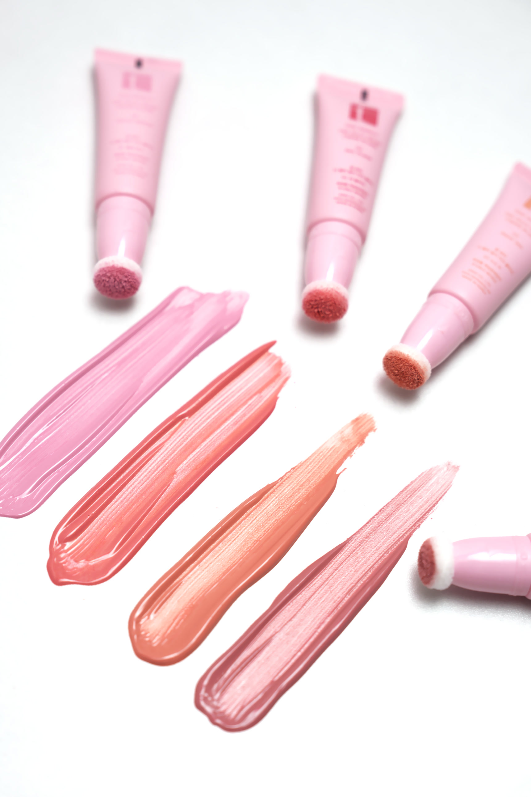
밀키 컬러부드럽게 물드는 생기
스펀지 팁용기 하나로 간편하게
비건 포뮬러네 가지 컬러 모두
브러시 없이
볼 위에 바로 톡톡.
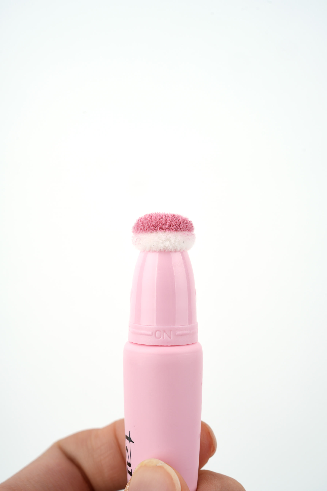
ON / OFF돌려서 여닫는 ON/OFF 조절부
- 01
ON으로 열기
팁에 소량 짜 주세요.
- 02
톡톡 펴 바르기
볼 위에서 두드려 주세요.
- 03
OFF로 닫기
사용 후 캡을 닫아 주세요.
처음에는 소량, 원하는 색감만큼 덧발라 주세요.
나의 볼에 어울리는
네 가지 밀키 컬러.
볼 위의 발색과 제형을 함께 비교해 보세요.
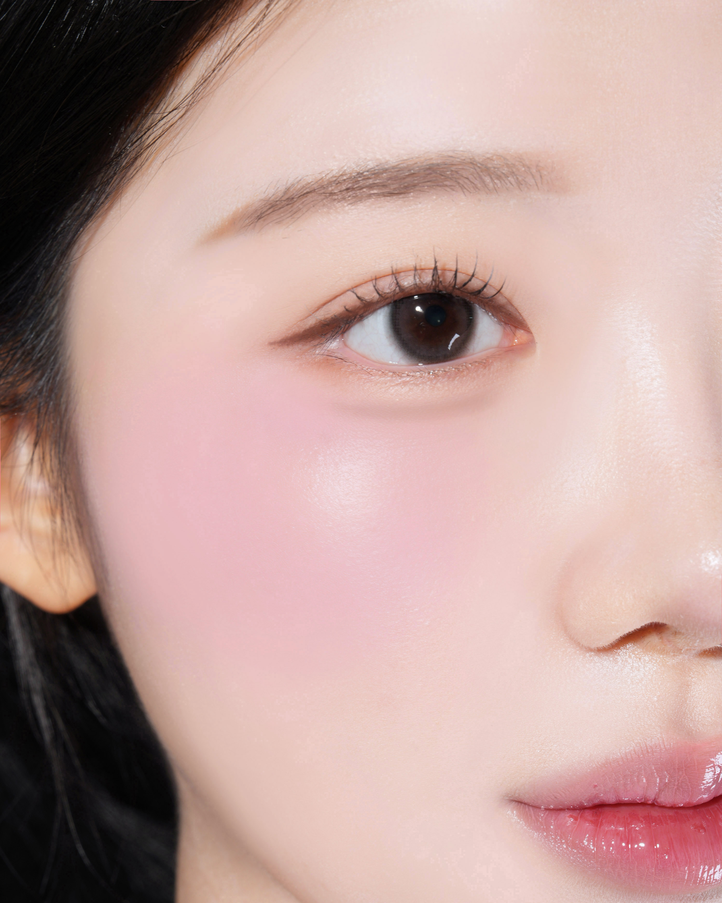
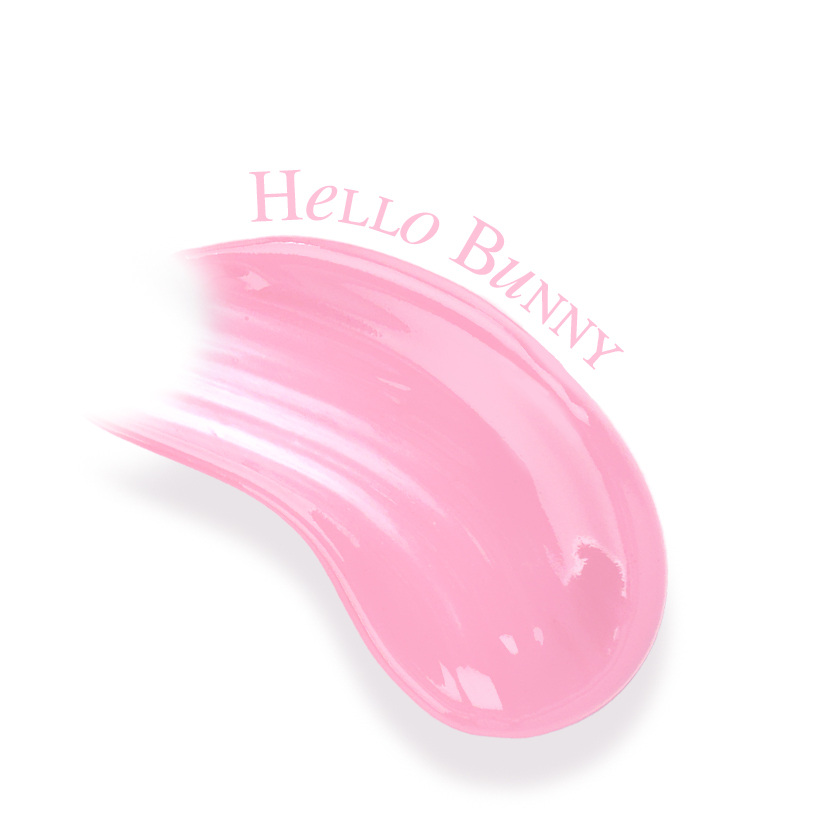
01 헬로버니
HELLO BUNNY
밀키 핑크
흰빛이 감도는 밝은 핑크.
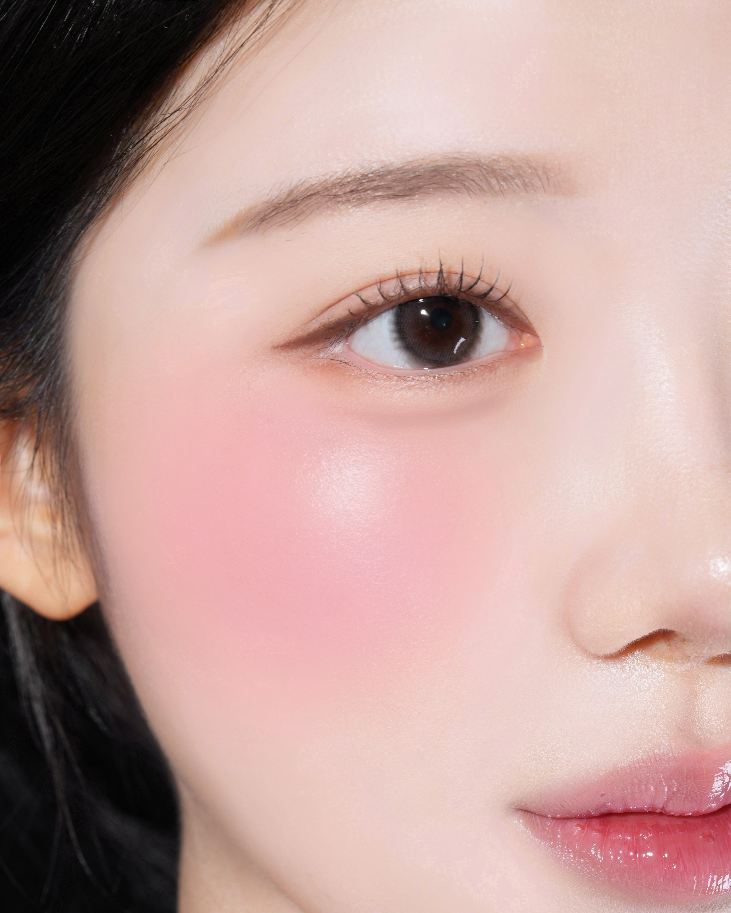
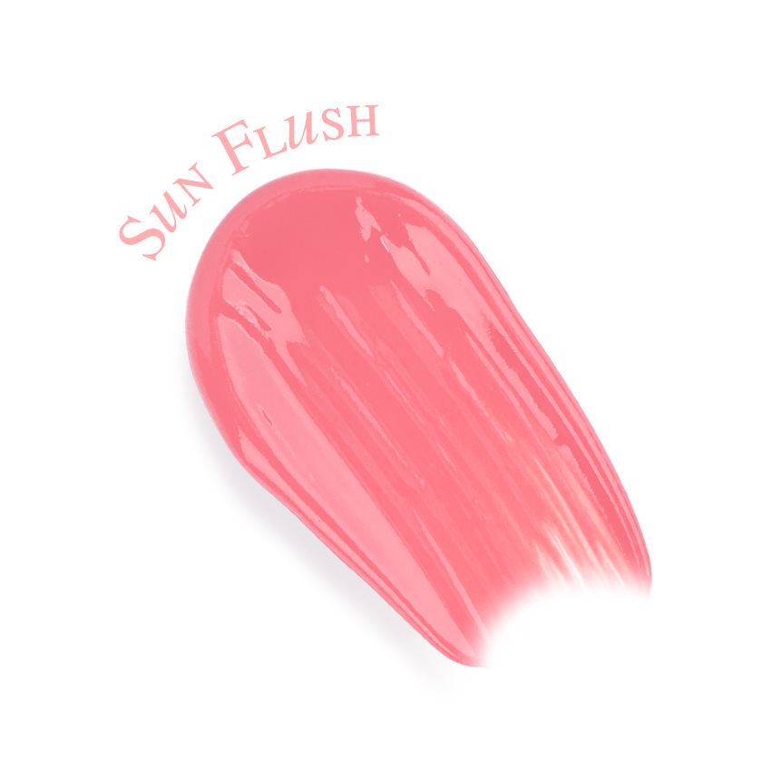
02 썬플러쉬
SUN FLUSH
코랄 핑크
코랄빛을 더한 따뜻한 핑크.
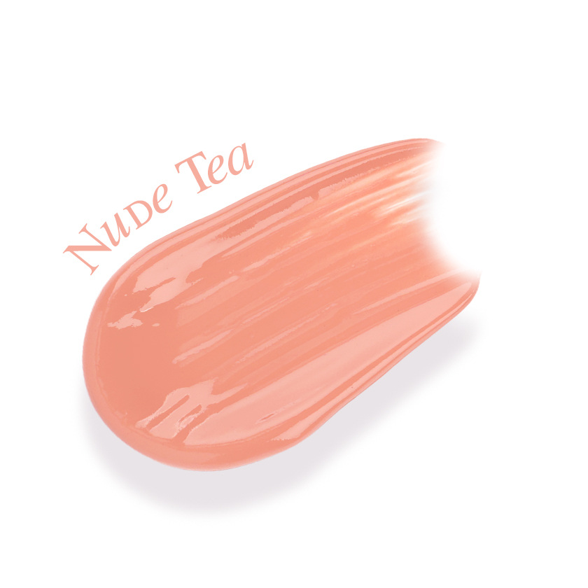
03 누드티
NUDE TEA
핑크 베이지
핑크를 머금은 부드러운 베이지.
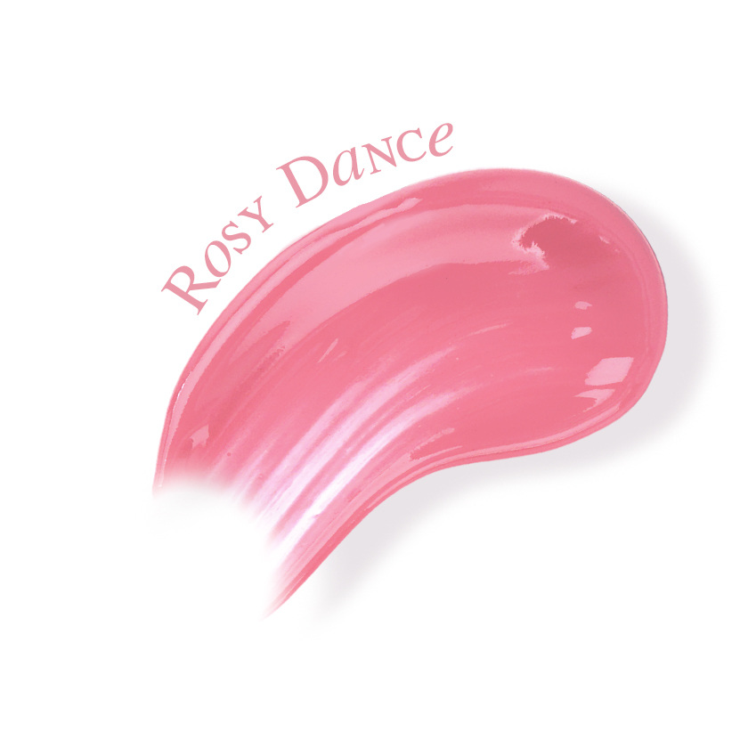
04 로지댄스
ROSY DANCE
모브 핑크
장밋빛이 감도는 차분한 모브.
피부 톤과 사용량, 조명 및 화면 환경에 따라 발색이 다르게 보일 수 있습니다.
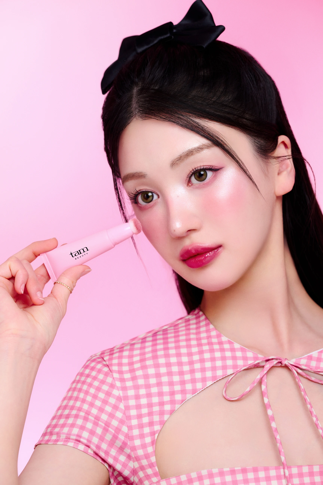
부드럽게 펴 바르는
밀키한 텍스처.
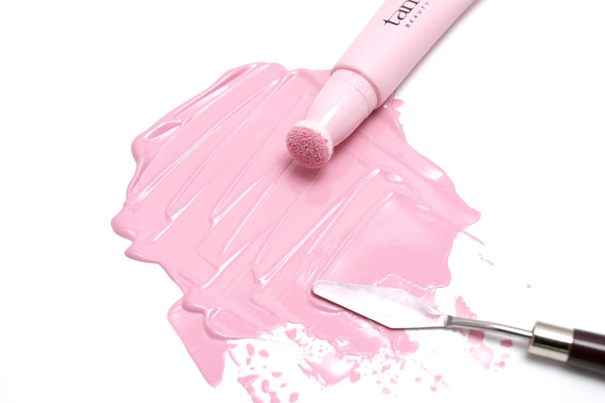
밀키한 컬러 속에 담은
스킨케어 성분.
히알루론산 계열부터 세라마이드NP까지.
네 가지 컬러에 공통으로 담았어요.
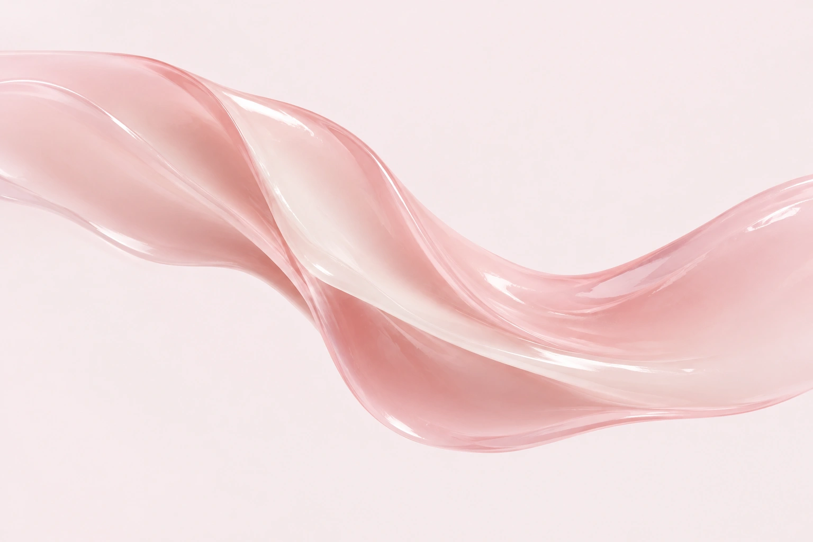
히알루론산 계열
소듐하이알루로네이트
하이알루로닉애씨드
스쿠알란
피부를 부드럽게 하는
스쿠알란*
판테놀·알란토인
피부 컨디셔닝 성분,
판테놀*
세라마이드NP
전성분명:
세라마이드엔피
*원료적 특성에 한함.
위 이미지는 포뮬러를 표현한 연출 이미지입니다.
피부 일차 자극
시험 완료.
4가지 컬러 각각
평균 피부반응도
한국피부과학연구원 · 성인 여성 32명
측정기간 2024.11.25 ~ 2024.11.28
24시간 첩포 후 제거 30분·24시간·48시간 평가
시험 조건에 따른 결과이며 개인차가 있습니다.